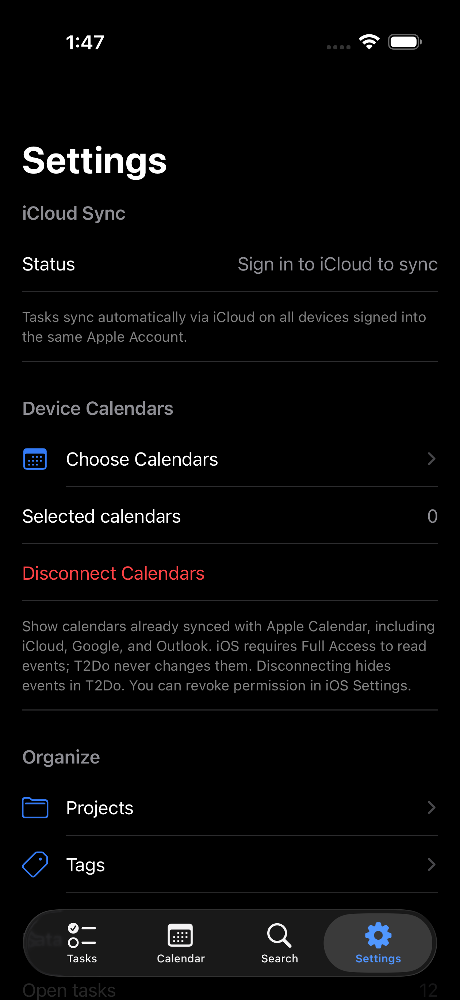

Due dates & time blocks
Choose when a task is due, then add a time block if you want to schedule the work. Date-only tasks stay flexible.
Coming to iPhone & iPad
T2Do is a time-blocking to-do list that puts scheduled tasks on a live timeline, keeps overdue work impossible to ignore, and folds your device calendars into the same view.
Overdue focus
Most apps bury yesterday's tasks under today's. T2Do pins them to the top of your day, in a colour you can't scroll past, until they're done or rescheduled. The moment you finish one, it slides away and the count drops.
The live timeline
Every task with a time block lands on an hourly schedule beside your calendar events. The red needle marks now. Try the interactive preview below to explore a sample day.
Calendar event · T2Do time block · Now
Everything a day needs
Choose when a task is due, then add a time block if you want to schedule the work. Date-only tasks stay flexible.
Block 25 minutes or 3 hours. Blocks stack side by side when they overlap, exactly like a calendar.
Choose calendars already synced with Apple Calendar, including iCloud, Google, and Outlook. Allow calendar access to display events beside your tasks. T2Do never changes your events.
Group work into colour-coded projects. A slim stripe on every row tells you what belongs where at a glance.
Tag across projects, flag what matters most, and break big tasks into checkable steps.
Choose a due-date reminder or a heads-up before a time block. Enable notifications to receive your reminders.
Search task titles and notes, or narrow your view to Today, Upcoming, Flagged, Completed, and tasks without a date.
Focus, Today, and Upcoming widgets keep your next move visible without opening the app.
Keep a location or phone number with a task, so the details you need stay with the work.
Your calendars. Your choice.
Use calendars synced with Apple Calendar—including iCloud, Google, and Outlook—without signing in to those services inside T2Do.
A simpler, flat Settings layout keeps calendar access, iCloud sync status, projects, and tags easy to find. No T2Do account required.
First add the account to Apple Calendar in your device settings and enable calendar syncing. Installing the Google Calendar or Outlook app alone does not make its calendars available to T2Do.

Private iCloud sync
Keep tasks on your device and sync them through your private iCloud database when iCloud is available. Use the same Apple Account on your devices—there is no separate T2Do account to create.
Three moves
Quick-add a task, then fill in a project, due date, or repeating schedule when you need one.
Add a time block for when you'll do the work and see it beside your selected calendar events.
Follow the red line. Tick things off. Watch the overdue count hit zero.
Currently in testing. Coming to the App Store for iPhone and iPad.